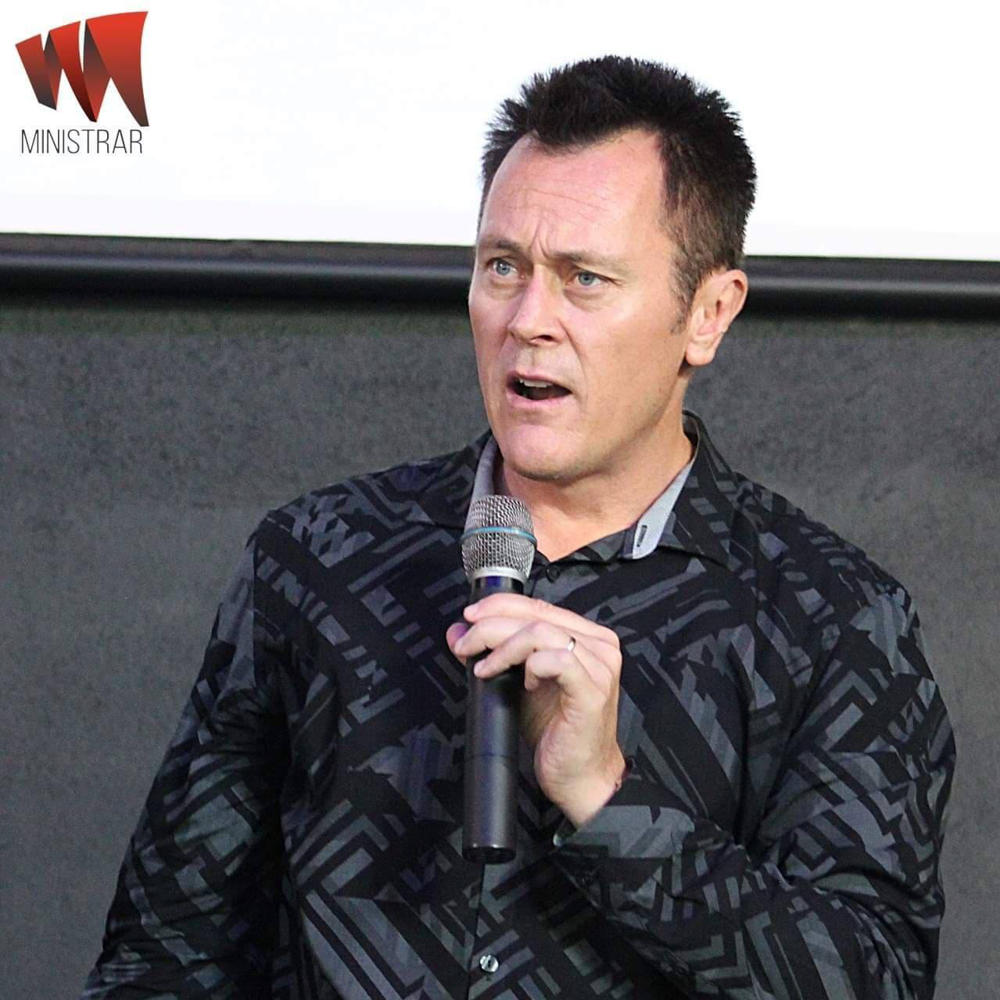

Australia

Reverend Dr. Robert Clancy
The Narrow Path Ministries
Missionary / Revivalist / Church Planter / Pastor
He has ministered in Asia, Africa, India, South America, USA and in Australia, which is his country of orgin.
Faith City Outreach Podcasts